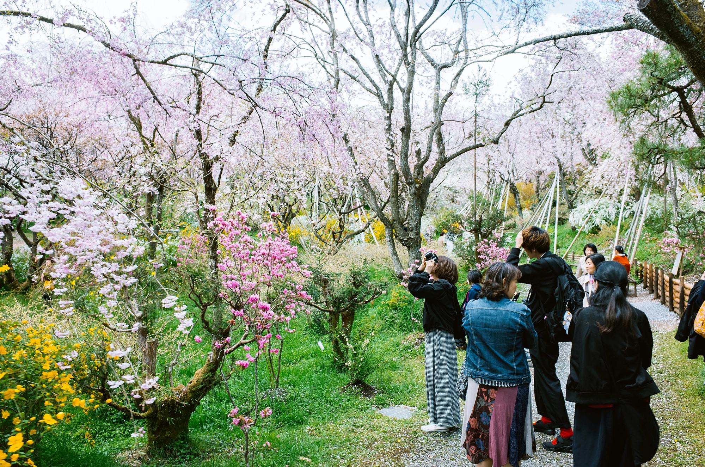

春｜季節の花まつり
季節の花をみつけて春を自然を体感しよう。
四季折々の祭典や、街を彩るアートイベントを企画・運営しています。
季節の花をみつけて春を自然を体感しよう。
老若男女、昔ながらの伝統から今の時代の曲まで楽しく踊ろう！

街全体をキャンバスに！多世代が参加できるスタンプラリー形式のアートフェスで、地元の魅力を再発見しましょう。
大人から子どもまで参加できる、街を駆け抜けるコース。
いつもの街がもっと楽しくなる、穴場や名店の発見ガイドです。

リニューアルしてさらに快適に。本を借りなくても気軽に立ち寄れる街の拠点。
昔ながらの「安くて美味い」が詰まった、街の台所。
ほっと一息つける、街の憩いの場。以前制作した『ぬくもりカフェ』と連携し、地域交流の拠点として活動しています。
カフェサイトを見る1年を通して、植物や風景の変化を楽しめるルートを提案。
ゴミ拾いや花植えなど、遊び心を加えた地域貢献活動を行っています。

ゴミ拾いを「スポーツ」として楽しみながら街をピカピカに。
駅前や歩道の花壇を、プロの指導を受けながら彩る植栽体験。自分たちの手で街を華やかに！
古くなった街の案内板を清掃し、最新情報をアップデート。街の歴史を学びながら、歩くのがもっと楽しくなる環境を作ります。